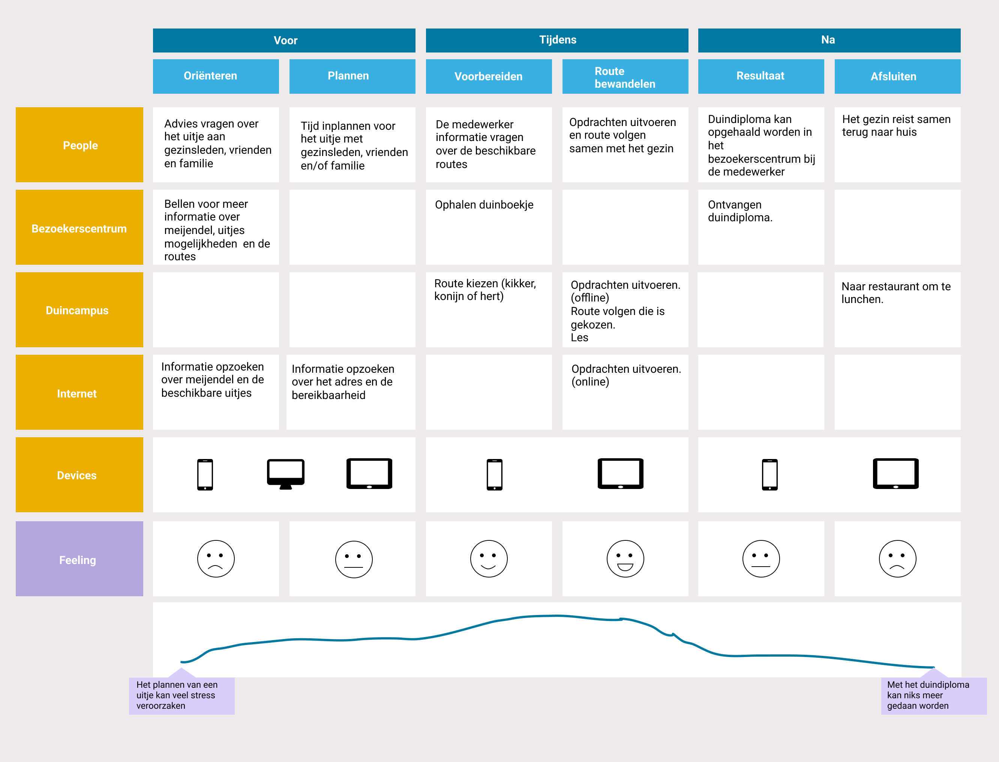

Minor User Experience
Opdrachtgever: Dunea
Jaar: 2019
Cijfer: 7
Doel
De site van Dunea aan laten sluiten bij de activiteiten en ervaring van Meijendal. De site is een aanvulling bij de offline ervaring. Het product dat ontworpen gaat worden moet dienen als een vervanging van het offline activiteiten boekje die bij de Tapuit gehaald kan worden.
01 Brainstorm
Dit project zijn we anders begonnen dan andere projecten. Zo zijn we dit project begonnen met het verzinnen van ideeën en mogelijke toepassingen die gebruikt kunnen worden. Dit om ervoor te zorgen dat we niet gelijk vastzitten op een onderwerp.
02 Onderzoek
Tot het onderzoek behoorde onderzoek naar de doelgroep en concurrenten. Het doelgroeponderzoek is uitgevoerd door interviews doen bij ouders, maar ook kinderen. Alle resultaten zijn verwerkt in een user experience map, waarbij de focus ligt op het begin van het uitje, uitvoeren van de activiteit en de ervaring nadat de doelgroep naar het park is geweest.
{kind=link}
03 Conceptualiseren
Uit de eerdere ideeën die zijn ontstaan is er gekeken of deze nog wel kunnen aansluiten bij de doelgroep. Vervolgens zijn hieruit drie concepten ontstaan. Deze zijn uitgewerkt storyboards om deze te presenteren aan de opdrachtgever Dunea.
{kind=link}
04 Visualiseren
Na de concepten is er na een evaluatie met de opdrachtgever een uiteindelijk concept gemaakt dat verder is uitgewerkt in een hi-fi prototype.
Klik hierop om het hi-fi prototype te zienWil je meer weten over dit project? Dan kan je contact met mij opnemen!